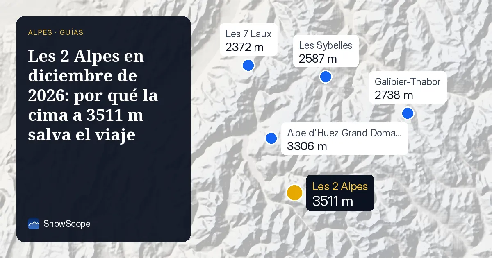

Les 2 Alpes en diciembre de 2026: por qué la cima a 3511 m salva el viaje
Cuando miras cada euro en un viaje de esquí, necesitas saber dónde está realmente la nieve en diciembre. Les 2 Alpes alcanza una cota máxima de 3511 m, lo que cambia las reglas del juego cuando la base de los remontes a 1284 m está escasa.
Consulta la previsión de nieve en tiempo real de Les 2 Alpes en la app SnowScopeEspesor de nieve, alertas de nieve polvo y mapa 3D, gratis.
Por qué la altura de la cima cambia el diciembre aquí
El dominio esquiable cuenta con 108 km de pistas y 46 remontes que cubren un gran desnivel de 2227 m. En la base de los remontes a 1284 m, nuestra historia de nieve de los últimos 46 inviernos muestra un espesor habitual en diciembre de solo 16 cm. El 15 de diciembre, el espesor habitual en la base es de 14 cm.
Sube más alto en la montaña y la historia cambia por completo. A mitad de la montaña a 2397 m, el espesor habitual en diciembre es de 75 cm. En la cima de los remontes a 3511 m, el espesor habitual en diciembre alcanza los 176 cm, con un espesor habitual el 15 de diciembre de 160 cm.

Las probabilidades de diciembre semana a semana
Si planeas esquiar a principios de mes, tienes que vigilar los números de cerca. A mitad de la montaña, la proporción de inviernos con 30 cm o más es del 76 % del 1 al 7 de diciembre, y sube al 89 % del 8 al 14 de diciembre. Para la semana del 15 al 21 de diciembre, esa proporción alcanza el 98 %.
En la cima de los remontes, la nieve es muy segura incluso desde el principio. La proporción de inviernos con 30 cm o más en la cima es del 98 % en la primera semana de diciembre, y llega al 100 % el resto del mes. Si buscas nieve profunda, un diciembre con poca nieve tiene 30 cm a mitad de la montaña y 72 cm en la cima, mientras que un diciembre con mucha nieve trae 140 cm a mitad de la montaña y 302 cm en la cima.
Lo que cuesta el forfait y la oferta del fin de semana de apertura
Esquiar con un presupuesto ajustado significa mirar los precios oficiales de los tickets antes de ir. Un forfait Grand Domaine de adulto de 6 días para el invierno 2026-27 cuesta 266,50 EUR. Si solo quieres un día suelto, la entrada Freedom con fecha flexible para un forfait Grand Domaine de adulto de 1 día cuesta 68,00 EUR.
Para quienes quieran esquiar justo al inicio de la temporada, el fin de semana de apertura el 28 y 29 de noviembre de 2026 tiene un forfait de adulto por día a un precio de 42 EUR. Ahora mismo, las cifras actuales de nieve muestran 0 cm en la base, 2 cm a mitad de la montaña y 72 cm en la cima. La previsión de nieve nueva a dos semanas para la mitad de la montaña y cotas superiores da una media de 94 cm con un rango de 75 cm a 112 cm.
Alpe d'Huez al lado, los mismos números frente a frente
Ayuda comparar Les 2 Alpes con Alpe d'Huez, al lado, para ver a dónde va tu dinero. Alpe d'Huez tiene un dominio esquiable con 163 km de pistas y 82 remontes, que van desde el remonte más bajo a 1124 m hasta el más alto a 3306 m.
En la base de Alpe d'Huez, el espesor habitual en diciembre es de 14 cm, muy parecido al de Les 2 Alpes. A mitad de la montaña a 2215 m, el espesor habitual en diciembre es de 60 cm, que es inferior a los 75 cm que se encuentran a mitad de la montaña en Les 2 Alpes. En la cima de Alpe d'Huez a 3306 m, el espesor habitual en diciembre es de 159 cm. En cuanto a los forfaits, un pase de adulto de 6 días en Alpe d'Huez cuesta 336,50 EUR, lo que hace que el pase de 6 días en Les 2 Alpes sea más barato.
Visión a largo plazo: inviernos antiguos frente a inviernos recientes
Al observar la estabilidad de la nieve a largo plazo, nuestra historia de nieve compara los primeros 15 inviernos de 1980-81 a 1994-95 con los últimos 15 inviernos de 2011-12 a 2025-26. A mitad de la montaña, el promedio de diciembre era de 63 cm en los primeros 15 inviernos, y subió a 77 cm en los últimos 15 inviernos.
En la cima de los remontes, el promedio de diciembre era de 147 cm en los primeros 15 inviernos, e incrementó a 188 cm en los últimos 15 inviernos. Aunque la base sigue escasa con un espesor habitual de 16 cm, las cifras de la parte alta de la montaña demuestran que los viajes de diciembre aquí siguen siendo fiables si te quedas en los remontes más altos.
Consejos para esquiadores
- Reserva tu forfait Grand Domaine de 6 días por internet por 266,50 EUR en lugar de comprar entradas diarias si te quedas toda la semana.
- Elige la semana del 15 al 21 de diciembre o más tarde, cuando la mitad de la montaña tiene un 98 % de posibilidades de tener 30 cm o más de nieve.
- Esquía por encima de la mitad de la montaña a 2397 m y más arriba, porque la base a 1284 m tiene un espesor habitual en diciembre de solo 16 cm.
- Consulta el boletín de avalanchas antes de esquiar fuera de pista, incluso cuando el espesor de la nieve parezca alto en la cima.
Más mapas (sitios externos)
Referencias y créditos
- Les 2 Alpes, official ski pass shop, prices 2026-27 www.skipass-2alpes.com/en/pricing
- Les 2 Alpes, official ski pass shop, opening weekend offer www.skipass-2alpes.com/fr/forfaits/ski
- Alpe d'Huez, official ski pass shop, winter 2026-27 skipass.alpedhuez.com/hiver/
- SnowScope, December snow at three heights and today's snow map snowscope.app/
Sobre estas cifras
Cifras de nieve: histórico de nieve de SnowScope, 46 inviernos pasados (1980-81 a 2025-26) a tres alturas de cada estación (un modelo del pasado corregido por altitud: una estimación para una zona, no mediciones de la estación); cifras de diciembre calculadas con los espesores diarios de esos inviernos. Nieve actual y tendencia a dos semanas: previsiones de SnowScope (tendencia de ECMWF y GFS, un rango, no una promesa). Remontes y pistas: cartografía de OpenSkiMap. Precios: las páginas oficiales de abajo, consultadas el 2026-11-13; los precios pueden cambiar, compruébalos antes de reservar.
Boletines oficiales de aludes: Météo-France – Bulletin d'estimation du risque d'avalanche
Citar este informe
Para investigación, docencia o prensa: cifras y gráficos reutilizables libremente bajo CC BY 4.0 con esta cita.
SnowScope (2026), Les 2 Alpes en diciembre de 2026: por qué la cima a 3511 m salva el viaje, https://snowscope.app/blog/es/2026/11/les-2-alpes-december-ski-cheap-glacier-2026.html, consultado el 2026-11-14
SnowScope (Atlas Labs). (2026, November 14). Les 2 Alpes en diciembre de 2026: por qué la cima a 3511 m salva el viaje. SnowScope snow reports. https://snowscope.app/blog/es/2026/11/les-2-alpes-december-ski-cheap-glacier-2026.html
BibTeX
@misc{snowscope2026les2alpesdecemberskichea,
author = {{SnowScope (Atlas Labs)}},
title = {Les 2 Alpes en diciembre de 2026: por qué la cima a 3511 m salva el viaje},
year = {2026},
month = nov,
howpublished = {\url{https://snowscope.app/blog/es/2026/11/les-2-alpes-december-ski-cheap-glacier-2026.html}},
note = {Published 2026-11-14 13:29 UTC; accessed 2026-11-14}
}· CC BY 4.0 · Métodos, datos y herramientas →
Les 2 Alpes: nieve y temperatura según la altura, este invierno vs el pasado (herramientas) →
Sigue Les 2 Alpes
Gratis: un aviso cuando llega la nieve y la previsión cada mañana.